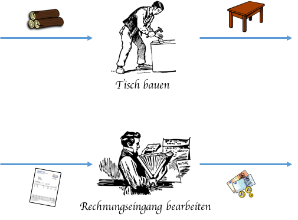
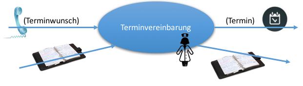
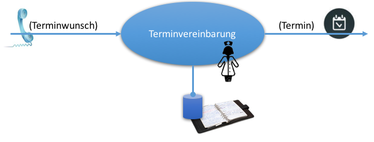
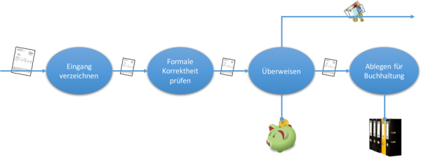
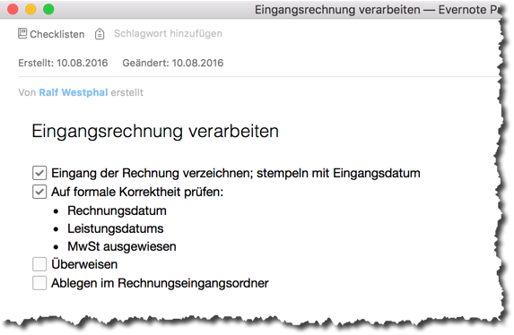
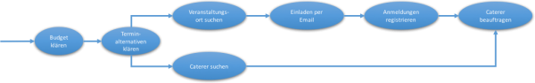
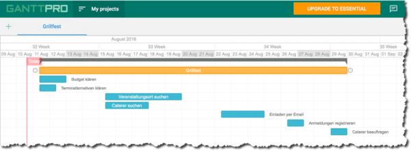

Prozesse im Büro verbessern
Was ist es eigentlich, das mit meinem Ansatz des Lean Digital Office verbessert werden soll? Es ist die Erledigung von Aufgaben und die Prozesse im Büro. Ihre Abarbeitung soll schlanker (engl. lean) vonstatten gehen. Weniger Schlacken und Plaque soll sie behindern. Die Verschwendung von Kapazitäten soll reduziert werden.
In einer Werkstatt oder Fabrik dreht sich die Arbeit um die Herstellung physischer Produkte. Das wird Produktion genannt. In deren Optimierung ist seit Jahrzehnten, gar seit Jahrhunderten viel Energie geflossen. Da ist die Produktion auch so schön greifbar. Man stolpert förmlich darüber, wenn sie ineffizient ist.
Produktion im Büro
Doch auch im Büro wird produziert. Eine Rechnung ist ein Produkt, eine geschaltete Anzeige ist ein Produkt, ebenso ein Quartalsbericht. Die Abnehmer dieser Produkte sind nur nicht zahlende Kunden außerhalb des Unternehmens. Nichtsdestotrotz handelt es sich aus meiner Sicht um Produktion, d.h. die Transformation von Ausgangsmaterial in Produkte.

Vielleicht klingt das für Sie ein wenig weit hergeholt oder gar theoretisch. Ich meine das jedoch sehr konkret. Dieser Blickwinkel erlaubt es mir nämlich, Erkenntnisse aus Jahrzehnten der industriellen Produktionsoptimierung auf das Büro zu übertragen. Das leidet ja gerade daran, dass es bisher nicht systematisch betrachtet wurde.
Prozesse im Büro
Es werden ständig Informationen aus unterschiedlichen Quellen und auf unterschiedlichen Medien transformiert in neue Informationen auf unterschiedlichen Medien. Eine Eingangsrechnung wird zu einer Überweisung, eine Terminanfrage zu einem Termin, ein Reisewunsch zu einer gebuchten Reise usw. usf. Die Vielfalt der Aufgaben im Büro macht die Verbesserung der Produktion dort so herausfordernd.
Ganz allgemein lässt sich das so darstellen:
Die Informatik sagt dazu auch EVA: Eingabe, Verarbeitung, Ausgabe.
Atomare Aufgaben
Manche der Aufgaben im Büro sind so simpel, wie diese Darstellung suggeriert. Wenn der Patient in der Arztpraxis anruft, um einen Termin zu vereinbaren, dann wird die Sprechstundenhilfe diese Anfrage sofort durch Konsultation des Praxiskalenders beantworten können.

Terminwunsch und Kalender sind die Eingabe- oder Eingangsinformationen, der konkrete Termin und ein aktualisierter Kalender die Ausgabeinformationen.
Da der Kalender sowohl Eingabe- wie Ausgabeinformation ist und nur der Sprechstundenhilfe intern vorliegt, kann er allerdings auch als Ressource angesehen werden. Dann fließt er nicht in die Aufgabenerledigung hinein und auch nicht aus ihr hinaus, sondern die Aufgabe ist abhängig von dieser Ressource.

Die Sprechstundenhilfe kann ihre Arbeit nicht tun, falls der Kalender nicht vorhanden oder nicht auf dem neuesten Stand ist. Das macht die Abhängigkeit ganz deutlich.
Bitte beachten Sie hier den Unterschied zwischen den Informationen, die fließen (Eingabe, Ausgabe) und den „stationären“ Information (Ressource)! Die gewöhnlich wichtigeren sind die fließenden. Wenn ich über Entschlackung und Reduktion von Verschwendung spreche, dann hat das zum Ziel, die Aufgabenerledigung im Hinblick auf diesen Informationsfluss zu verbessern.
So weit so einfach ein Beispiel einer quasi atomaren Aufgabe. Sie lässt sich kaum sinnvoll weiter zerlegen. Eine Person erledigt sie entweder ganz oder gar nicht „in einem Rutsch“.
Mehrschrittige Aufgaben 1: Protokolle
Die wenigsten Aufgaben im Büro fallen jedoch in diese Kategorie. Sonst wäre der Büroalltag auch viel einfacher zu bewältigen – oder langweiliger 😉
Aus genügend großer Entfernung sehen zwar alle Aufgaben so simpel aus. Wenn man jedoch nähertritt… dann ändert sich das Bild sehr schnell. Dann besteht eine Aufgabe nicht aus einem Arbeitsschritt, sondern aus mehreren.
Als Beispiel mag die Bearbeitung einer Eingangsrechnung dienen. Selbst im einfachsten Fall gehören dazu wohl diese Teilaufgaben:
- Eingang verzeichnen, z.B. durch Eingangsstempel
- Auf formale Korrektheit prüfen
- Inhaltliche Richtigkeit prüfen
- Überweisen
- Ablegen für die weitere Buchhaltung
Eine Eingangsrechnung korrekt zu bearbeiten will also gelernt sein. Wer neu in einem Büro ist, kann Schritte vergessen oder fehlerhaft durchführen.
Eine schematische Darstellung für diesen Vorgang könnte so aussehen:

Eine Rechnung wird transformiert in einen Geldbetrag für einen Lieferanten unter Verwendung einiger Ressourcen.
Wenn Ihnen das im Augenblick noch etwas sperrig erscheint, verstehe ich das. Diese Darstellung ist ja auch nicht für den täglichen Gebrauch gedacht. Im Tagesgeschäft hat jemand diese Schritte im Kopf, weil er/sie gut angelernt wurde. Oder die Schritte stehen auf einer kleinen Checkliste:

Im Englischen nennt man soetwas auch Standard Operating Procedure, eben ein standardisiertes Vorgehen. Ich finde dafür jedoch den Begriff Protokoll knackiger. (Manchmal sage ich aber auch Routine.) Nicht im Sinne einer Dokumentation von etwas, das stattgefunden hat (bsp. Besprechungsprotokoll), sondern im Sinne einer festgelegten Abfolge von Schritten und Verhaltensweisen (bsp. Protokoll für einen Staatsempfang).
Die Arbeit im Office ist voll mit solchen Protokollen. Arbeiten werden immer wieder in derselben Weise erledigt, schemahaft. Oft ist das schon erkannt worden – andererseits steckt manchmal in einem Mangel an solcher Schematisierung aber gerade das Optimierungspotenzial.
Dabei hilft mir dann die Darstellung als Diagramm. Sie enthält mehr Informationen als eine Checkliste und lässt sich leichter überblicken.
Für die saubere persönliche Abarbeitung von Protokollen jedoch ist eine Checkliste ein probates Hilfsmittel. So wie eine Aufgabenliste ein probates Mittel ist, um einen Überblick über all die noch zu durchlaufenden Protokolle zu behalten.
Ob dafür Papier und Stift oder eine Software zum Einsatz kommen, ist zunächst unwichtig.
Mehrschrittige Aufgaben 2: Projekte
Bei Protokollen ist von vornherein klar, was in welcher Reihenfolge zu tun ist. Und das wird immer wieder zu tun sein. Protokolle beschreiben die Transformationsschritte sich wiederholender Aufgaben.
Aber lange nicht alles im Büro folgt einem Protokoll. Vieles passiert quasi nur einmal, vieles ist neu, wenn es als Aufgabe plötzlich im Raum steht. Solche mehrschrittigen Aufgaben bezeichne ich als Projekt.
Wenn Sie damit beauftragt werden, ein Grillfest für die Abteilung auszurichten, dann ist das kaum ein Protokoll, das angestoßen wird, sondern ein Projekt. Das erkennen Sie daran, dass Sie sich als erstes überlegen müssen, was denn überhaupt zu einer erfolgreichen Transformation des Grillfestwunsches in ein tatsächlich stattfindendes Grillfest nötig ist. Gäbe es dazu ein Protokoll, müssten Sie das nur stur abarbeiten.
Ergebnis Ihrer Überlegung mag ebenfalls eine Checkliste sein – allerdings eine ganz neue, nie zuvor gesehene. Zum Beispiel:
- Budget erfragen beim Management
- Terminalternativen abstimmen mit den Teilnehmern
- Veranstaltungsort suchen
- Caterer suchen
- Einladungen mit Veranstaltungsdetails per Email verschicken
- Anmeldungen registrieren
- Caterer konkret beauftragen mit Teilnehmerzahl
Die mehrschrittige Transformation sieht dazu wie beim Protokoll aus. Wieder gibt es Eingaben, Ausgaben und Ressourcen:

Wenn Sie es noch weiter treiben wollen, können Sie sogar einen Projektplan anfertigen, in dem Sie den Teilaufgaben Aufwände zuweisen und das Potenzial zu gleichzeitiger Abarbeitung ausloten.

Wenn Sie ein Projekt jedoch nicht allein bewältigen, sondern in Zusammenarbeit mit anderen, dann reicht eine Checkliste kaum mehr aus. Wie behalten Sie in diesem Fall den Überblick über den Fortschritt und woran die Beteiligten arbeiten? Das ist eine Herausforderung gerade im Büroalltag, der gewöhnlich nicht auf die Abarbeitung von Projekten ausgerichtet ist – und doch immer wieder Projekte zu bewältigen hat.
Das ist eine Entwicklung unserer Zeit. Früher ging es im Büroalltag viel häufiger um Protokolle. Doch die gestiegene Komplexität der Märkte und daher auch der internen Organisation führt dazu, dass immer weniger Resultate mittels Protokollen hergestellt werden können. Projekte sind an der Tagesordnung, ad hoc Kollaboration ist die Norm – neben vielerlei Protokollarbeit.
Ein Symptom dieser Veränderung sind die von vielen gehassten Besprechungen. In Ermangelung anderer systematischer Herangehensweise oder geeigneter Kommunikationswerkzeuge sollen sie die Fortschrittskontrolle und Koordination von Projektbeteiligten richten. Das ist gut gewollt – aber im Effekt leider allzu oft Verschwendung par excellance.
Zusammenarbeit in Prozessen
Die Unterscheidung bei mehrschrittigen Aufgaben zwischen Protokollen und Projekten ist sehr hilfreich für die konkrete Entschlackung.
Für den allgemeinen Blick auf das „Optimierungsfeld Büro“ ist es nützlich, zunächst die Gemeinsamkeit beider zu betonen. Das tue ich, indem ich sie unter dem Oberbegriff Prozess zusammenfasse.
Protokolle wie Projekte sind Prozesse, d.h. Aufgaben bestehend aus mehreren Verarbeitungsschritten, die mal nacheinander, mal parallel durchgeführt werden können.
Aus größerer Entfernung betrachtet ist ein Prozess eine Gesamttransformation, näher herangezoomt jedoch zerfällt er in viele Teiltransformationen, die in einem gewissen Abhängigkeitsverhältnis zu einander stehen.
Der Fokus von Prozessen ist auf dem, was fließt, insbesondere auf dem, was am Ende herausfließt. Zu dessen Produktion sind Prozesse da.
Prozesse sind also nicht eine Sache nur der Industrie oder der Herstellung physischer Produkte. Prozesse lauern überall. Sie sind nichts Besonderes. Trotzdem oder gerade deshalb lohnt sich eine systematische(re) Betrachtung. Denn der Durchfluss von Prozessen gehorcht in der Industrie wie dem Büro letztlich den selben Gesetzen.
Prozessoptimierung mit BPM
Für Geschäftsprozesse, die sich abteilungsübergreifend durchs Unternehmen ziehen, wurde das auch schon erkannt. Damit beschäftigt sich z.B. das Business Process Modelling (BPM).
Der Horizont der Gechäftsprozessbetrachtung ist mir meist jedoch zu weit gespannt. Für mich sind die Prozesse im Büro von einer eigenen Art. Beim Lean Digital Office geht es nur um eine Teilmenge aller Geschäftsprozesse, die Büroprozesse in Form von Protokollen und Projekten. Für deren Verbesserung bediene ich mich zwar durchaus Mitteln der BPM, doch ich fühle mich ihnen nicht verpflichtet. Das Büro braucht mehr Flexibilität in den Methoden und Werkzeugen zu Vergrößerung des Flusses. Gute Resultate lassen sich zügiger und kostengünstiger erreichen unterhalb des Radars einer „richtigen“ Geschäftsprozessanalyse, -modellierung, -automatisierung.
Zusammenfassung
Geschwindigkeit (engl. celerity) ist für mich das Ergebnis geschmeidiger Zusammenarbeit (engl. collaboration) in Bezug auf die zentralen Produkte der Prozesse, d.h. die herzustellenden Informationen und Inhalte (eng. content).
Wenn wir zusammen Ihre Prozesse im Büro angehen, dann also mit Blick auf diese drei C: Collaboration, Content und Celerity (CCC). Je verschwendungsärmer, je schlanker, entschlackter die Prozesse, desto flüssiger werden Inhalte produziert, d.h. die Produktivität und Wertschöpfung sind höher – aber desto größer auch die Entspannung dabei.
Weitere Artikel

Regeln für KI im Office
ChatGPT & Co haben sich schnell in die Herzen und Alltag von vielen Menschen im Berufs- und Privatleben gespielt. Diese neuen Werkzeuge eröffnen uns viele Chancen, nicht nur effizienter zu werden, sondern auch kreativer. Aber …

KI als Copilot für die Assistenz
KI in Form von ChatGPT & Co sind hervorragende neue Werkzeuge im Office-Alltag, um produktiver und ja, auch kreativer, zu werden. Neugier statt Angst ist angezeigt im Umgang mit diesen Werkzeugen, die wie andere Werkzeuge auch …